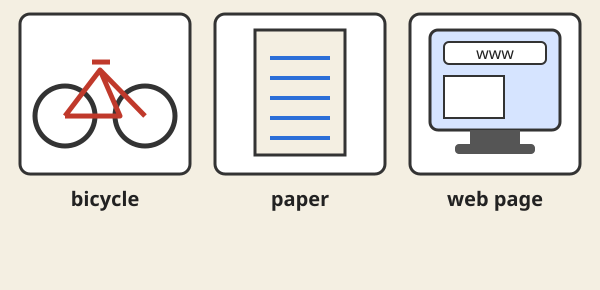
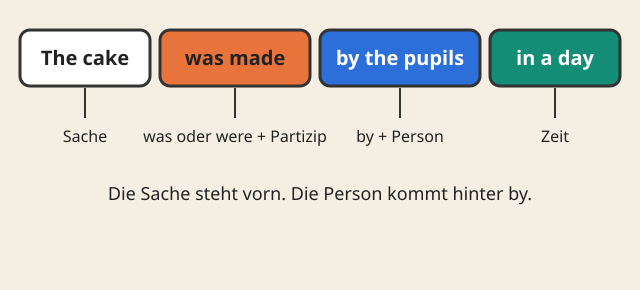

Technik und Fortschritt: was invented by …
Mit einem KI-Tutor lernen
Ein KI-Tutor erklärt dir diese Seite und hilft dir bei den Aufgaben. Wähl deinen Assistenten:
Mit Claude öffnen Mit ChatGPT öffnen Mit Mistral Vibe öffnen
Du nutzt dein eigenes Konto beim Anbieter. Der Assistent ist kein Angebot von lernapps.net: lernapps liefert nur Inhalte und Aufgaben. Die Wahl gilt für alle Seiten, nur auf diesem Gerät.
Was gibt es am längsten?

© CC-BY-4.0Drei Erfindungen: das Fahrrad, das Papier und die Webseite.
Mr Hill hängt ein Plakat über Erfindungen auf. Amir, Sophie und Ellie suchen Fakten.
Aufgabe
Lösung
Das Fahrrad mit Kette
Vergleiche die Jahreszahlen im Chat.
Das World Wide Web
Vergleiche die Jahreszahlen im Chat.
Das Papier richtige Antwort
Papier wurde schon vor etwa 1900 Jahren gemacht.
Papier ist viel älter als ein Fahrrad mit Kette und als das Web.
Das kannst du danach: Du sagst, wann und von wem etwas erfunden wurde.
Fakten für das Plakat
| Englisch | Deutsch |
|---|---|
| invent, invention | erfinden, Erfindung |
| code | Programmcode |
| process | Verfahren |
| ink | Druckfarbe |
| recycled | wiederverwertet |
| chain | Kette |
| ball bearing | Kugellager |
| develop | entwickeln |
| web | Netz, Gewebe (hier das Internet-Angebot) |
Die drei Kinder sammeln Fakten. Die Zahlen sind die Zeilen.
1 Amir: Mr Hill wants one fact for our poster about inventions. I found one. The World Wide Web was invented by Tim Berners-Lee in 1989.
2 Sophie: Cool! Is it used for anything special?
3 Amir: It is used for sharing information. In 1993 the code of the web was made free for everyone.
4 Sophie: My fact is about paper. Paper was made in China at least as early as the year 105.
5 Ellie: Was it invented by one person?
6 Sophie: People say that Cai Lun invented the process. However, older paper-like pieces were found, so nobody is sure.
7 Ellie: I have a fact about recycling. A process for taking ink out of recycled paper was invented by the German Justus Claproth in 1774.
8 Amir: Today this process is called deinking. And what about bikes?
9 Ellie: The first upright bike with a chain was developed around 1885.
10 Sophie: Several parts that were important for cars, like ball bearings, were first made for bicycles.
Im Passiv steht die Sache vorn

© CC-BY-4.0Die Bausteine eines Passivsatzes.
Merke
Passiv in der Vergangenheit: was oder were und das Partizip. The poster was made in a week. Die Person nennst du mit by: The poster was made by the class.
Passiv heute: is oder are und das Partizip. A pen is used for writing. Das Material nennst du mit of (man erkennt es noch: The table is made of wood.) oder mit from (es wird verarbeitet: Paper is made from wood.). by nennt die Person, also nie invented from.
Das Partizip endet oft auf -ed (invent, invented). Einige sind unregelmäßig: build, built, make, made, write, written. Nach was steht nie die Grundform (was invent) und nie die ing-Form (was inventing).
Ist nicht klar, wer etwas erfunden hat, bleib vorsichtig: People say that …
Erfindungen zuordnen, Passiv schreiben
Aufgabe
Lösung
Cai Lun lebte nicht in China
Davon steht nichts im Chat.
Man hat ältere papierähnliche Stücke gefunden, darum ist nicht sicher, wer das Verfahren erfand richtige Antwort
Das steht in Zeile 6 nach However.
Papier wurde erst 1989 erfunden
Die Jahreszahl 1989 gehört zum Web.
Wenn nicht klar ist, wer etwas erfunden hat, sagt man People say.
Aufgabe
Lösung
Richtige Antwort: 1993
Seit 1993 darf jeder den Code des Web frei benutzen. 1989 ist das Jahr, in dem es erfunden wurde.
Aufgabe
Lösung
Richtige Antwort: the World Wide Web – Tim Berners-Lee, 1989; a process for taking ink out of recycled paper – Justus Claproth, 1774; the first upright bike with a chain – um 1885
Die Fakten stehen in den Zeilen 1, 7 und 9.
Aufgabe
Schreibe das fehlende Wort.
- Der Brief wurde von Ellie geschrieben. → The letter was … by Ellie.
- Die Tasche wurde aus Plastik gemacht. → The bag was made … plastic.
- Das Buch wird von vielen Kindern gelesen. → The book is … by many children.
Lösung
- The letter was written by Ellie.
- The bag was made from plastic.
- The book is read by many children.
Nach was oder is steht das Partizip. By nennt die Person, of oder from das Material.
Aufgabe
Schreibe auf Englisch. Satz 1: Das Web wurde 1989 erfunden. Satz 2: Das Fenster wurde von Mr Hill geöffnet. Satz 3: Fahrräder werden zum Reisen benutzt. Die englischen Wörter sind nur eine Hilfe: Ergänze, was für einen ganzen Satz fehlt.
- web · invent · 1989
- window · open · Mr Hill
- bicycles · use · travel
Lösung
- The World Wide web was invented in 1989. (auch richtig: The web was invented in 1989.)
- The window was opened by Mr Hill.
- Bicycles are used for travelling. (auch richtig: Bicycles are used for travel.)
Aufgabe
Hör zu und schreibe, was du hörst.
- KI
- KI
- KI
Lösung
- The old school was built a long time ago.
- Mobile phones are used in every country.
- Our classroom was cleaned by the pupils.
Ist diese Erfindung nützlich?
Aufgabe
Hör zu, sprich nach und nimm dich auf. Vergleiche dann mit dem Original.
Tipp
Hör zu. Sprich dann langsam nach.
- When was it invented?KI
- Many useful things were invented long ago.KI
- Tell me more about this machine.KI
Zum Aufnehmen braucht diese Aufgabe JavaScript. Die Beispiele kannst du auch ohne anhören.
Lösung
- When was it invented?
- Many useful things were invented long ago.
- Tell me more about this machine.
Offene Aufgabe
Wähle eine Erfindung, die du jeden Tag benutzt. Schreibe einen Satz im Passiv darüber, zum Beispiel mit is used for. Beantworte dann mit einem Burger aus vier Sätzen die Frage: Is this invention useful?
Tipp
Die App bewertet nicht. Prüfe deinen Text anhand der Punkte.
Eine gute Antwort enthält:
- Der Passivsatz hat is oder are und ein Partizip. Nachlesen
- Der Burger hat vier Schichten in der richtigen Reihenfolge. Nachlesen
- Die Meinung ist begründet, und das Beispiel ist etwas, das wirklich passiert ist. Nachlesen
- Du schreibst nur Fakten, die du sicher weißt. Sonst schreibst du People say. (Form)
Lösung
A mobile phone is used for calling and for messages. I think it is a very useful invention. It is useful because I can talk to my friends at any time. For example, last week I asked a friend for help when I missed my train. So I think the mobile phone is useful.
Wie es weitergeht
Danach schreibst du den Leserbrief zu dem Artikel über Plastikmüll.
Fehler gefunden oder eine Idee für diese App?